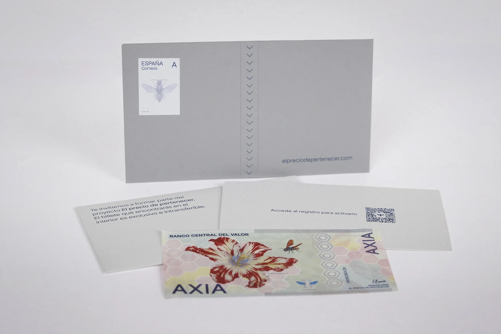
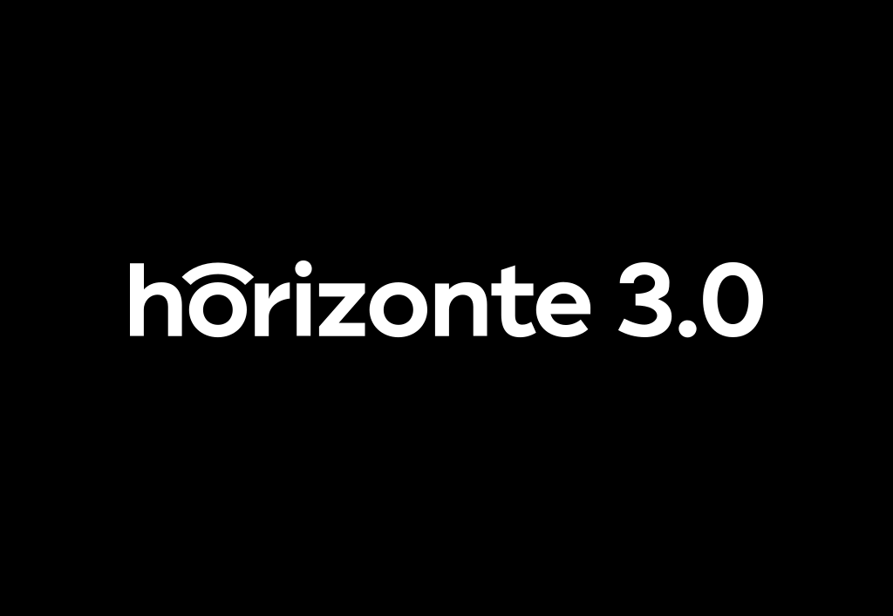
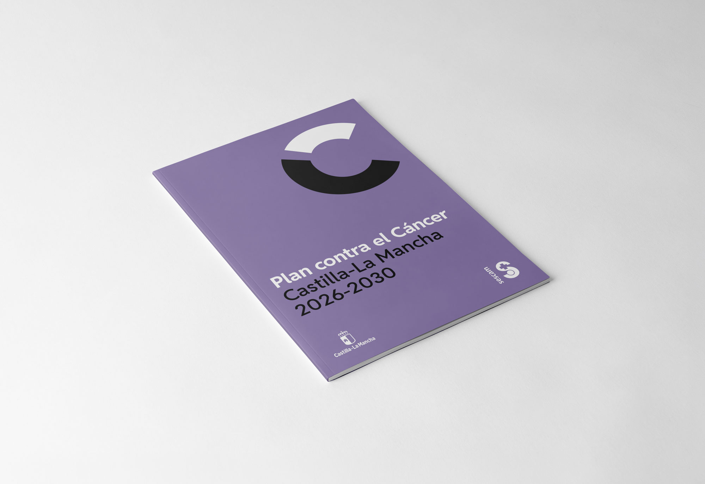
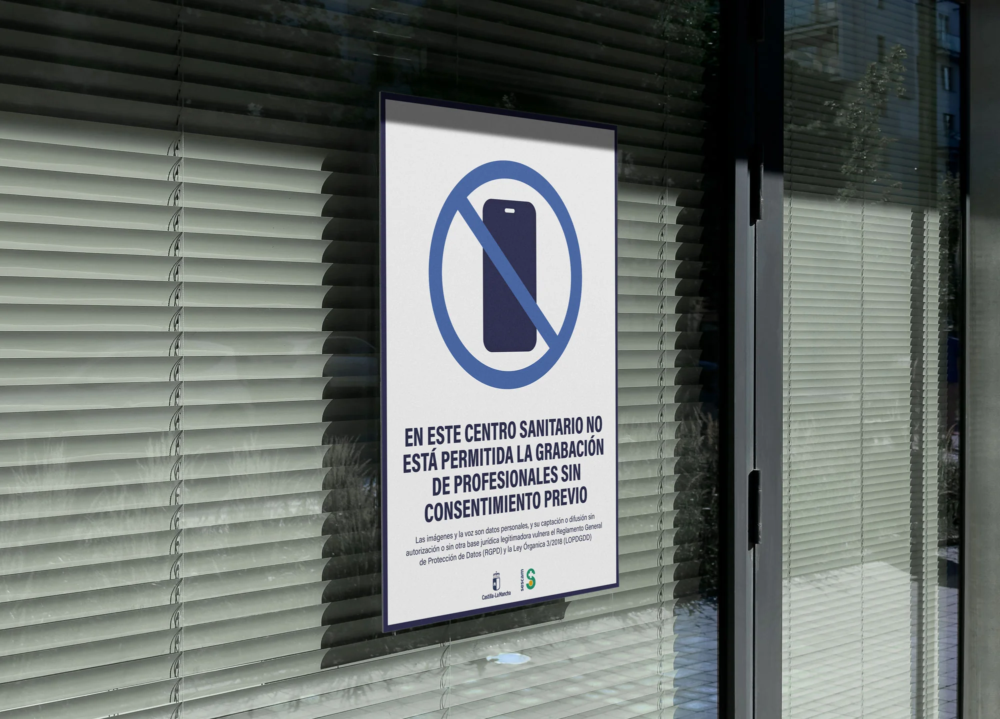
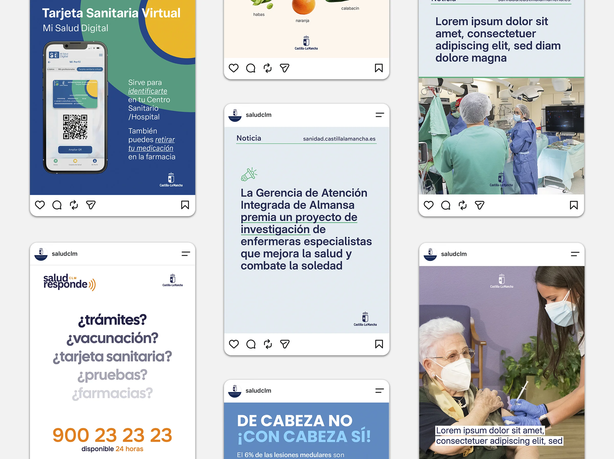

CLARA GONZÁLEZ BLANCO
Proyectos
Sobre mí
Contacto

01 TFM
El precio de pertenecer
2026

02 Identidad visual
horizonte 3.0
2026

03 Diseño editorial
Plan contra el cáncer
2026
04 Diseño editorial
en el límite
2025

05 Señalética
Carteles de normas
2026

06 Contenido digital
Salud CLM
2026